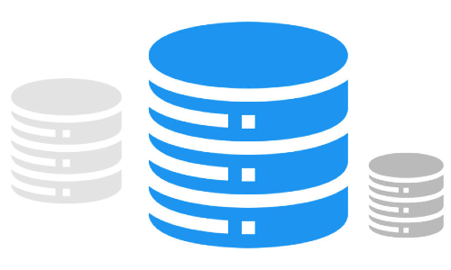

Desarrollo de Bases de Datos
El desarrollo de bases de datos es el proceso de diseño, implementación y mantenimiento de
sistemas de gestión de bases de datos (DBMS) para almacenar y gestionar datos de manera
eficiente y segura. Implica la creación de estructuras de datos, la definición de relaciones
entre esos datos y la implementación de lógica empresarial para garantizar que la información
esté organizada y sea accesible de manera efectiva.
Lenguajes y Tecnologías.
SQL (Structured Query Language):
SQL es el lenguaje estándar para la gestión y
manipulación de bases de datos relacionales.
MySQL: Un sistema de gestión de bases de datos relacionales (RDBMS) de código abierto
que utiliza SQL como lenguaje de consulta.
NoSQL: NoSQL es una categoría de sistemas de bases de datos que se utilizan para
almacenar y recuperar datos no estructurados o semiestructurados. Ejemplos incluyen
MongoDB y Cassandra.
Oracle Database: Un RDBMS comercial ampliamente utilizado en aplicaciones
empresariales que requieren alta disponibilidad y rendimiento.
Conceptos fundamentales.
Modelado de Datos: El proceso de diseño de la estructura de la base de datos, que
incluye la definición de tablas, relaciones y restricciones.
Normalización: La técnica de organizar datos en tablas de una manera que minimiza la
redundancia y asegura la integridad de los datos.
Índices: Los índices se utilizan para acelerar la búsqueda y recuperación de datos al
crear estructuras optimizadas que permiten una búsqueda más eficiente.
Transacciones: Las transacciones aseguran la consistencia y la integridad de los
datos al agrupar operaciones en unidades atómicas que deben completarse con éxito o
deshacerse por completo.
Optimización de Consultas: La optimización de consultas se refiere al proceso de
mejorar el rendimiento de las consultas SQL a través de estrategias como la selección
de índices adecuados y la reescritura de consultas.
Áreas especializadas.
Administrador de Bases de Datos (DBA): Los DBAs se especializan en la administración,
configuración y mantenimiento de sistemas de bases de datos, garantizando su
disponibilidad y rendimiento.
Desarrollo de Almacenes de Datos (Data Warehousing): Se enfocan en diseñar y crear
almacenes de datos para el almacenamiento y análisis de grandes conjuntos de datos,
con herramientas como Oracle Data Warehouse y Amazon Redshift.
Desarrollo de Bases de Datos en Memoria: Los expertos en bases de datos en memoria se
especializan en sistemas que almacenan y procesan datos en memoria principal, lo que
permite un acceso más rápido a los datos.
Bases de Datos Geoespaciales: Se centran en el almacenamiento y la consulta de datos
relacionados con ubicaciones geográficas, lo que es esencial en aplicaciones de
geolocalización y SIG (Sistemas de Información Geográfica).
Análisis de Datos y Business Intelligence (BI): Los profesionales de BI se
especializan en el uso de bases de datos para extraer información valiosa, generar
informes y visualizar datos para ayudar en la toma de decisiones empresariales.
